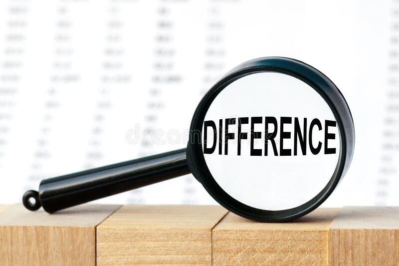

SHA 256 is a part of the SHA 2 family of algorithms, where SHA stands for Secure Hash Algorithm. Published in 2001, it was a joint effort between the NSA and NIST to introduce a successor to the SHA 1 family, which was slowly losing strength against brute force attacks.
SHA-256 is one of the most popular hash algorithms around. It is often referred to as a 'digest', 'fingerprint' or 'signature' as those are unique and often never the same.
It is almost a perfect unique string of character that is generated from a separate piece of input text, SHA-256 generates a 256-bit signature.
SHA-256 is one of the most secure hashing functions on the market. The US government requires its agencies to protect certain sensitive information using SHA-256.
Three properties make SHA-256 this secure. First, it is almost impossible to reconstruct the initial data from the hash value. A brute-force attack would need to make 2256 attempts to generate the initial data.
Second, having two messages with the same hash value (called a collision) is extremely unlikely. With 2256 possible hash values, the likelihood of two being the same is infinitesimally, unimaginably small.
Finally, a minor change to the original data alters the hash value so much that it's not apparent the new hash value is derived from similar data; this is known as the avalanche effect.

Difference between SHA1 & SHA2
The primary difference between SHA-1 and SHA-2 is the length of the hash. While SHA-1 is the more basic version of the hash providing a shorter code with fewer possibilities for unique combinations, SHA-2 or SHA-256 creates a longer, and thus more complex, hash.
In 2015, new SSL certificates with SHA-1 were phased out. By 2016, it became mandatory for SHA-2 to be used for all new certificates. However, some old certificates remain, which is why SHA-1 is still being used to this day.
That concludes the SHA256 basic lesson.
←
→